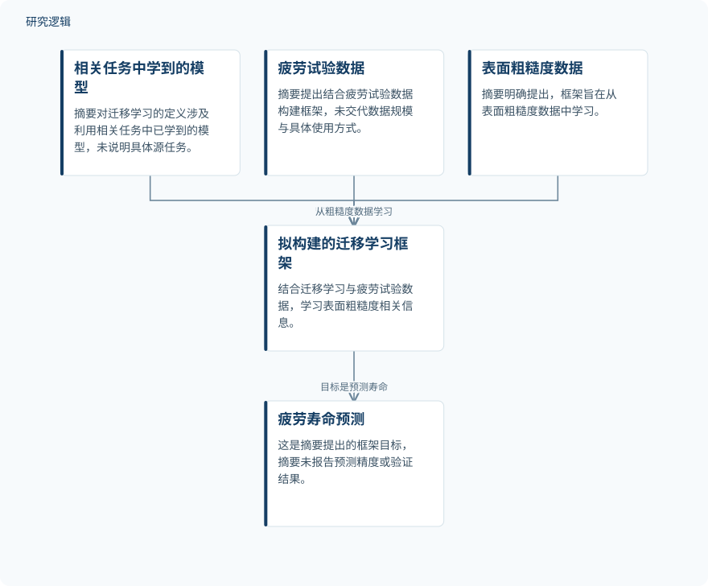

摘要解读
面向增材制造零件疲劳寿命预测的迁移学习框架
Transfer learning framework for fatigue life prediction of additively manufactured parts
解读更新 2026-11-14 15:54 · 依据公开摘要整理，未核验全文细节
增材制造零件的表面粗糙度如何影响疲劳寿命，又如何在疲劳试验数据稀缺时开展预测？这项研究提出迁移学习框架的构建目标，阅读价值在于理解其问题逻辑，而非寻找摘要尚未给出的精度结论。
文章目录
表面深谷与昂贵试验构成双重难题
增材制造能够快速制造定制化产品，并有望减少资源需求，但摘要指出，其零件的长期服役表现相较传统制造零件仍有不足，限制了在关键任务场景中的应用。
作者将原始制造状态零件的这一问题主要归因于表面粗糙度：受工艺物理机制影响，表面粗糙难以避免，深谷处可能形成应力集中并成为裂纹萌生位置，进而导致失效。与此同时，疲劳试验耗时且成本高，使可供建模的数据更加稀缺。
借助相关任务知识，学习粗糙度与寿命的联系
摘要介绍的核心方法是迁移学习，即利用相关任务中已经学到的模型，帮助目标任务在较小训练数据集下开展学习。研究拟结合迁移学习与疲劳试验数据，构建从表面粗糙度数据学习并预测疲劳寿命的框架。
这里能够确认的是研究输入、预测目标及迁移学习思路。摘要没有交代相关任务具体是什么，也没有说明粗糙度如何表征、模型采用何种结构，以及哪些知识或参数被迁移。
依据摘要整理的迁移学习框架示意


概括摘要提出的输入、迁移学习思路与预测目标；不是论文原图，也不表示框架已经完成验证。
下载 SVG图示关系说明
实线表示相邻阶段的信息流，虚线表示跨阶段联系或反馈。
相关任务中学到的模型 → 拟构建迁移学习框架：利用相关任务模型；表面粗糙度数据 → 拟构建迁移学习框架：从粗糙度数据学习；疲劳试验数据 → 拟构建迁移学习框架：结合疲劳试验数据；拟构建迁移学习框架 → 疲劳寿命预测目标：旨在预测
摘要提出潜在用途，尚未报告预测成效
摘要将这一框架的价值表述为：有望缓解增材制造零件疲劳行为研究中的数据稀缺问题，并支持其更广泛的应用。但这些属于研究目标和潜在用途，不能据此认定数据不足已经得到解决。
本次摘要没有报告预测误差、对照结果或具体案例表现。因此，目前可提炼的是“以迁移学习连接粗糙度数据与疲劳寿命预测”的研究思路，而不是已经得到量化验证的性能提升。
样本、比较与验证边界仍待正文说明
仅凭摘要，无法判断材料与制造工艺范围、试样数量、载荷条件、数据划分方式，以及是否覆盖不同粗糙表面状态。也无法判断与哪些方法进行了比较，是否开展独立验证或跨条件验证。这些都是当前资料未报告的信息，不代表论文没有开展相应工作。
阅读启发：先追问迁移依据，再看寿命预测
阅读启发：后续阅读可重点关注源任务与目标任务为何相关，以及这种相关性如何帮助模型利用有限疲劳数据。同时，应区分模型学习到的粗糙度关联与裂纹萌生的物理解释，并核对作者用什么证据界定预测的适用范围，而不提前将框架设想等同于可靠性保障。
以上为本站阅读启发与建议，不是论文已验证的结论。